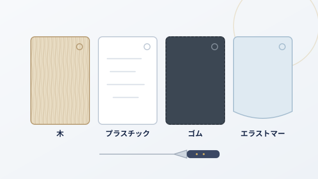

暮らしの道具は、見た目が似ていても中身がまるで違うことがあります。 違いがどこにあり、自分の暮らしならどれを選べばいいのか。 商品をすすめる前に、まず判断できる材料をお渡しします。

キッチン用品値段は数百円から2万円まで。違いを生んでいるのは、ほとんど素材です。 4種類を刃あたり・衛生面・お手入れ・寿命で比べ、暮らし方別に整理しました。
読む →容量・口径・ポンプの押し心地・詰め替えやすさ。似て見えて、使い勝手が大きく分かれる道具です。
近日公開明るさの単位、演色性、調光・調色。カタログの数字のどこを見れば失敗しないのかを整理します。
近日公開
取り上げてほしいテーマを募集しています。
「これを選ぶのに迷っている」というものがあれば、
お問い合わせフォームからお知らせください。
調べて記事にします。